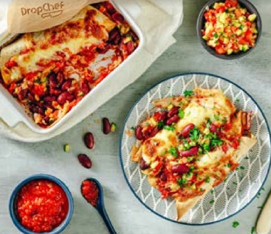

Enchiladas are the ultimate comfort food. We made these enchiladas a well balanced veggie meal,
by swapping the meat for fibre and protein-filled beans! The tortilla wraps offer some
carbohydrate while the cheese balances the meal out with some fats and calcium.
All the veggies make sure you are getting plenty of vitamins and fibre too!
Ingredients
Onion
Kidney Beans
Bell Pepper
Garlic
Sweetcorn
Chipotle Paste
Sweetcorn
Spice Mix
Ground Coriander
Ground Cumin
Tinned Tomatoes
Tortilla Wraps
Grated cheese

Nutritional Info
Calories: 638 kcal
Carbohydrates: 82 g
Protein 32 g
Fat 16 g
Allergies
Wheat (Tortilla Wraps)
Milk (Cheese)
Read the entire recipe from start to finish. Trust us! You'll be
more familiar with the steps and cooking the dish will be a
METHOD stroll in the park. Before you begin give the vegetables a
quick rinse.
Method
Pre-heat the oven to 200c
Prepare the vegetables
Peel and finely chop the onion and garlic. Dice the bell pepper.
Drain and rinse the kidney beans. Drain the sweetcorn.
Saute the vegetables
Place a frying pan on medium-high heat with a drizzle of oil.
Add the onion, garlic, and peppers and fry for 3 minutes,
then add the kidney beans and sweetcorn, spice mix, and season with salt and pepper.
Cook for a further 2-3 minutes.
Make the sauce
While the vegetables are cooking, prepare the sauce. In a bowl, mix the
chopped tomatoes with the chipotle paste, a good pinch of salt, and some pepper.
Assemble the enchiladas & bake
Divide the vegetable bean mix among the tortillas and roll the wraps up.
Spoon a third of the sauce into an ovenproof dish, put the tortillas on top,
then pour over the remaining sauce and scatter with the cheese. Bake for
20-25 minutes until golden and bubbling.